|
Component Family |
Messaging | |
|
Function |
cMessagingEndpoint allows two applications to communicate by either sending or receiving messages, one endpoint can not do both. | |
|
Purpose |
cMessagingEndpoint sends or receives messages. | |
|
Basic settings |
URI |
URI of the messages to send or receive. It can be of different format: -File: "file:/", -Database: "jdbc:/", -Protocols: "ftp:/", "http:/" -etc. You can add parameters to the URI using the generic URI syntax, for example:
For more information on the different components that can be used in cMessagingEndpoint, see Apache Camel’s Website: http://camel.apache.org/components.html. |
|
Advanced settings |
Dependencies |
By default, the camel core supports the following components: bean, browse, class, dataset, direct, file, language, log, mock, properties, ref, seda, timer, vm. To use other components, you have to provide the dependencies corresponding to those components in the cMessagingEndpoint component. To do so: Click the plus button to add new lines in the Camel component list. In the line added, select the component you want to use in cMessagingEndpoint. |
|
|
Use a custom component |
If you want to use a custom component, select this check box and click the three-dot button to upload a jar file with your own component.
NoteAll the transitive dependencies of this custom component should be included in the jar file. |
|
Usage |
This component can be used as sending and/or receiving message endpoint according to its position in the Route. | |
|
Limitation |
n/a | |
This scenatio uses two cMessagingEndpoint components to read and move files from one endpoint to another.
From the Messaging folder of the Palette, drag and drop two cMessagingEndpoint components onto the design workspace, one as the message sender and the other as the message receiver, and label them Sender and Receiver respectively to better identify their roles in the Route.
Right-click the component labeled Sender, select Row > Route in the menu and drag to the Receiver to link them together with a route link.
Double-click the component labeled Sender to open its Basic settings view in the Component tab.
In the URI field, type in the URI of the messages you want to route.
As we are handling files, type in "file:///" and the path to the folder containing the files.
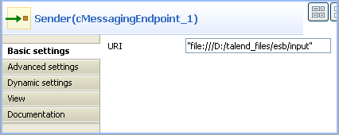Double-click the component labeled Receiver to open its Basic settings view in the Component tab.
In the URI field, type in the URI of the folder where you want to route your message.
As we are handling files, type in "file:///" and the path to the folder to which the files will be sent.

Press Ctrl+S to save your Route.
To have a look at the generated code, click the Code tab at the bottom of the design workspace.
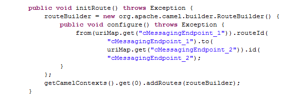 The code shows the
fromand.tocorresponding to the two endpoints:fromfor the sending one and.tofor the receiving one.In the Run view, click the Run button to launch the execution of your Route.
You can also press F6 to execute it.
RESULT: The files are moved from their original folder to the target one. Furthermore, a new .camel folder is created in the source folder containing the consumed files. This is Camel’s default behavior. Thus, the files will not be processed endlessly but they are backed up in case of problems.
This scenario accesses FTP service and transfers files from one endpoint to another.
From the Messaging folder of the Palette, drag and drop two cMessagingEndpoint components onto the design workspace, one as the message sender and the other as the message receiver, and label them Sender and Receiver respectively to better identify their roles in the Route.
Right-click the component labeled Sender, select Row > Route in the menu and drag to the Receiver to link them together with a route link.
Double-click the component labeled Sender to display its Basic settings view in the Component tab.
In the URI field, type in the URI of the message you want to route.
Here, we are using an FTP component:
ftp://indus@degas/remy/camelwith URI specific parameters authenticating the FTP connection:?username=indus&password=indus.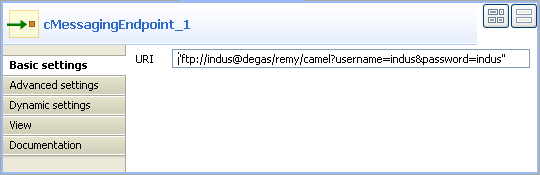 For the FTP component to work in Camel, click the Advanced settings tab of cMessagingEndpoint, click the [+] button to add a Camel component in the Dependencies table, and select ftp from the Camel component list to activate the FTP component.
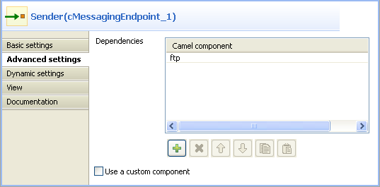 Double-click the component labeled Receiver to open its Basic settings view in the Component tab.
In the URI field, type in the URI of the folder to which you want your message to be routed.
As we are handling files, type in "file:///" and the path to the folder to which the files will be sent.
Press Ctrl+S to save your Route.
To have a look at the generated code, click the Code tab at the bottom of the design workspace.
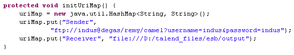 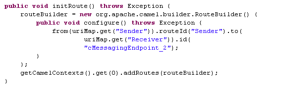 In this part of code, we can see a route represented by
fromand.to, corresponding to the sending and receiving endpoints.In the Run view, click the Run button to launch the execution of your Route.
You can also press F6 to execute it.
RESULT: The message is sent (copied) to the receiving endpoint.
In this scenario, we will use a cMessagingEndpoint component to call a Route Resource as an Xquery parser to extract messages from the local file system.
The following sample XML file is used in this scenario:
<people>
<person id="8">
<firstName>Ellen</firstName>
<lastName>Ripley</lastName>
<city>Washington</city>
</person>
<person id="9">
<firstName>Peter</firstName>
<lastName>Green</lastName>
<city>London</city>
</person>
</people>
From the repository tree view, right-click the Resources node and select Create Resource from the context menu.

The New Route Resource wizard opens. In the Name field, type in a name for the Resource, for example, SampleXquery. Click Finish to close the wizard.
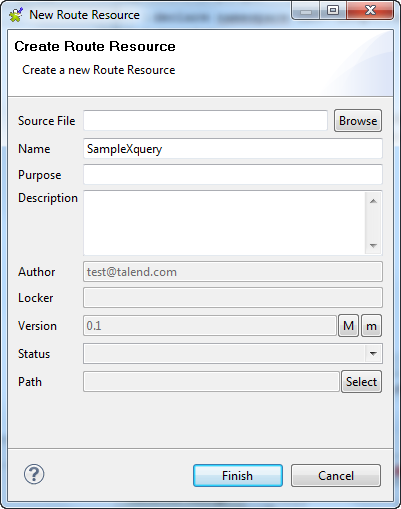Enter the following code in the editor to extract the firstName and lastName of all the person elements.
declare namespace ns0="http://com.sap/b"; <people> { for $p in /people//person return <person> <firstName>{$p/firstName/text()}</firstName> <lastName>{$p/lastName/text()}</lastName> </person> } </people>Press Ctrl+S to save your Route Resource.
From the Messaging folder of the Palette, drag and drop a cFile and a cMessagingEndpoint component onto the design workspace.
From the Processor folder, drag and drop a cProcessor component onto the design workspace.
Link the components with the Row > Route connection as shown above.
Label the components for better identification of their functionality.
Double-click the cFile component to open its Basic settings view in the Component tab.
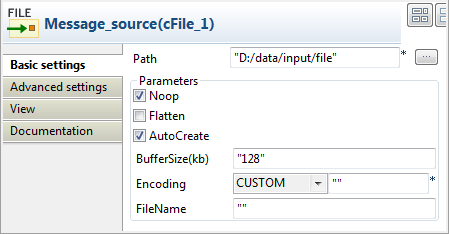In the Path field, specify the path where the source file people.xml is located.
Right-click the Route from the repository tree view and select Manage Route Resources from the context menu.

The Manage Route Resources wizard is opened.
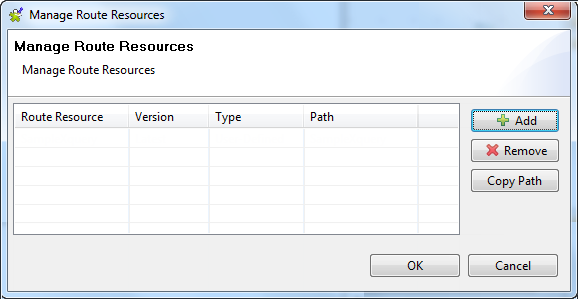In the Manage Route Resources wizard, click Add and select SampleXquery from the Resources tree view in the dialog. Click OK.
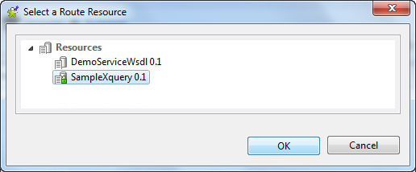The SampleXquery Route Resource is added in the table of the Manage Route Resources wizard.

Select the SampleXquery from the Route Resources list and click Copy Path. Click OK to close the wizard.
Double click the cMessagingEndpoint component to display its Basic settings view in the Component tab.
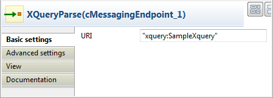In the URI field, enter xquery: and paste the path of the Route Resource SampleXquery that we just copied in double quotation marks.
Click the Advanced settings tab, add the Camel component saxon in the Dependencies list. For more information about Xquery, see Apache Camel’s Website: http://camel.apache.org/xquery-endpoint.html.

Double-click the cProcessor component to open its Basic settings view in the Component tab.
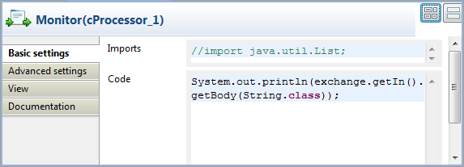In the Code area, enter the following code to display the messages intercepted on the console:
System.out.println(exchange.getIn().getBody(String.class));
Press Ctrl+S to save your Route.
To have a look at the generated code, click the Code tab at the bottom of the design workspace.

As shown in the code above, the message is routed
fromMessage_source_cFile_1.tocMessagingEndpoint_1and then processed bycProcessor_1.In the Run view, click the Run button to launch the execution of your Route. You can also press F6 to execute it.
RESULT: The firstName and lastName of all the person elements of the source file is printed in the console.
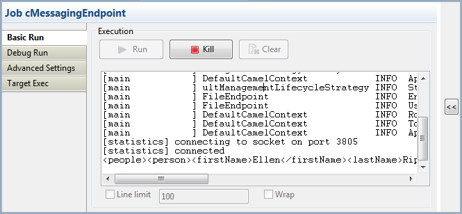